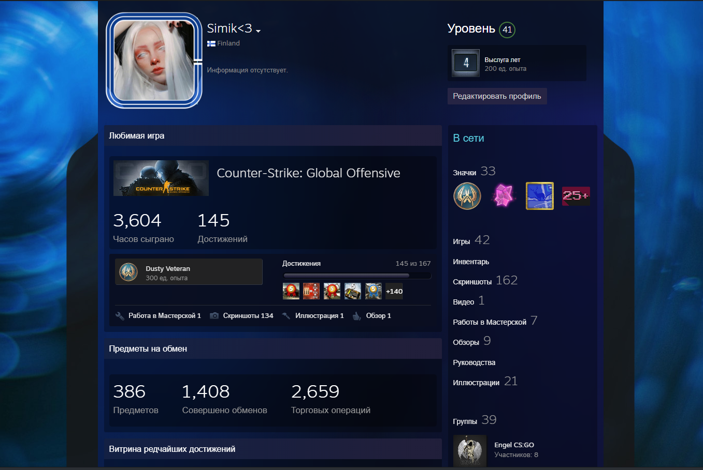

Напевно, на світі немає людини, у якої не було б хобі, тобто улюбленого заняття. І неважливо, з чим це пов’язано — зі співом, малюванням, письменством, кулінарією або фотографією. Це не робота, не обов’язок і навіть не додатковий спосіб заробітку. Це почуття, бажання отримати задоволення від процесу та добитися ідеального результату, завзятість у придбанні й розвитку навичок. Або просто відпочинок після важкого робочого дня.
У багатьох людей є хобі. Вони роблять наше життя більш цiкавим. Хоббі це те, що люди хотіли б робити, коли у них є вільний час.
Кожен вибирає хобі згідно його характеру і смаку. Деякі люди люблять музику, інші люблять читати книги.
Деякі люди люблять збирати марки, монети або значки, інші вважають за краще озеленення або піший туризм або фотографувати.
Деякі люди люблять готувати, інші в'язати або шити. Грубо кажучи, хобі - це справа смаку.
Моє хобі - грати в комп'ютерні ігри. Як дорослі, так і діти люблять це тепер. Це стало одним з найбільш популярних хобі в даний час. Я думаю, що комп'ютерна гра дуже цікава.
Це не тільки "витрачати час", як деякі люди кажуть.
За свої 4 роки гри я досяг достатнiх успiхiв у комп`ютерній дисциплiнi Counter-Strike: Global Offensive. Мною була зiграна достатня кiлькiсть турнiрiв та квалiфiкацiй.
Для мене iгри це не тiльки витрачання часу,а й пошук нових знайомств. Граючи,я познайомився з багатьма іноземцями , з якими я можу спiлкуватися , підвищуючи рівень англiйської мови.
